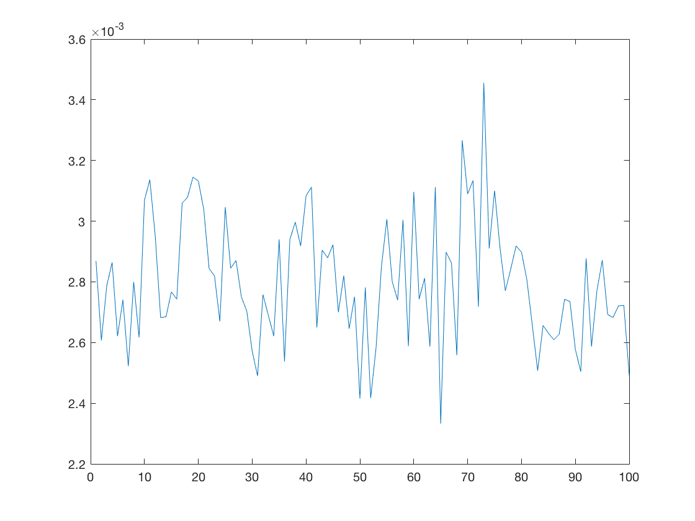

Contents
clear all;
close all;
feat = xlsread('Dataset.xlsx', 2);
data = xlsread('Dataset.xlsx');
data = data(:,2);
feat=feat(:,2:end);
No features
MeanDiff = mean(diff(data));
a such operation enables to study the variations of the share price without looking at any feature i.e supposing that the data
the prices variations are purely random : This approach clearly shows that there is a higher probability that this share
price goes up (mean = 0.69)
remove volumes for features :We have many reasons to think that volumes
are not really involved in determining our stock market price because they are
more likely a consequence of the evolution of their respective stock market prices
rather a cause to their changes. An other important fact that Volumes
do not really provide us a relevant information about the tendances of the
stock market prices since we don't know more details about them (number of sales .. )
We think that they more likely represent a stochastic noise (White noise) more than
a real useful process.
feat(:,4)=[];
feat(:,8)=[];
feat(:,12)=[];
feat(:,end)=[];
csvwrite('features.csv', feat);
csvwrite('target.csv', data);
remove mean
for l=1:size(feat, 2)
featdiff(:,l)=diff(feat(:,l));
featdiff(featdiff(:,l)>=0,l)=1;
featdiff(featdiff(:,l)<0,l)=-1;
end
We perform a regression between diff(data(t)) and diff(feat(0 -> t-l)) l =1:100
y=diff(data);
y(diff(data)>=0)=1;
y(diff(data)<0)=-1;
y(end)=[];
for l=1:100
CVO = cvpartition(size(y, 1),'kfold',5);
err = zeros(CVO.NumTestSets,1);
for i = 1:CVO.NumTestSets
trIdx = CVO.training(i);
teIdx = CVO.test(i);
[u, B] = regression(y(trIdx,:),featdiff(trIdx,:),l);
ytest = [ones(length(featdiff(teIdx,:)),1) featdiff(teIdx, :)]*B'+u;
err(i) = (norm(ytest - y(teIdx)))^2/norm(y(teIdx))^2;
end
cvErr(l) = sum(err)/sum(CVO.TestSize);
end
plot(cvErr);
[u,B] = regression(y,featdiff(1:size(featdiff, 1)-1, :),1);
yreg =([ones(length(featdiff)-1,1) featdiff(1:size(featdiff)-1,:)]*B'+u);
yreg(yreg>=0)=1;
yreg(yreg<0)=-1;
Rsq=var(yreg)/mean((yreg-mean(y)).^2)
Rsq =
0.9550

Here we can see that we obtain an Rsquare = 0.95, which means that our data fits well in a Linear Model
We also could have worked on Gaussian processes or Suppose that
stock prices are Markovian or use an SVM classification approach
We can therefore work on a trading strategy :
The predicted change in stock prices will therefore serve to developing a a trading strategy
When we expect that the target stock price is going to increase,
We buy an action (yreg>0)and when we expect that the target stock price
is going down in next day we sell 1 action. There our strategy will
require a 1 day frequency trading. For the sake of simplicity, we have
chosen to just ignore non working days (Without data) because we assume
that there are no arbitrage opportunities and that data is quasi-continuous,
, no jumps (belongs to the B&S Model, dXt = (mu_t*dt+sigma_t*dWt)X_t) and a Black
and in a such model there no jumps. We also could have used a linear interpolation for the missing
but finally we think that a such approach would add no relevant information
to our predictive Model.
A such approach can be tested by computing the scalar product between
the yreg and the stock prices.
We expect that the trader would sell or buy the remainig stock actions
in the last day of the trading period
Spent_Money =yreg'*data(2:length(data)-1);
Money_from_sale = sum(yreg)*data(end);
Earned_Money = Money_from_sale-Spent_Money
Earned_Money =
3.3226e+05
We can see that we finally earn: 33226 dollars.
We have also worked on an SVM approach that can be found on a python
notebook file. The approach did not provide nice results because scores were
low and that's why we preferred to investigate more on a linear regression
Model.